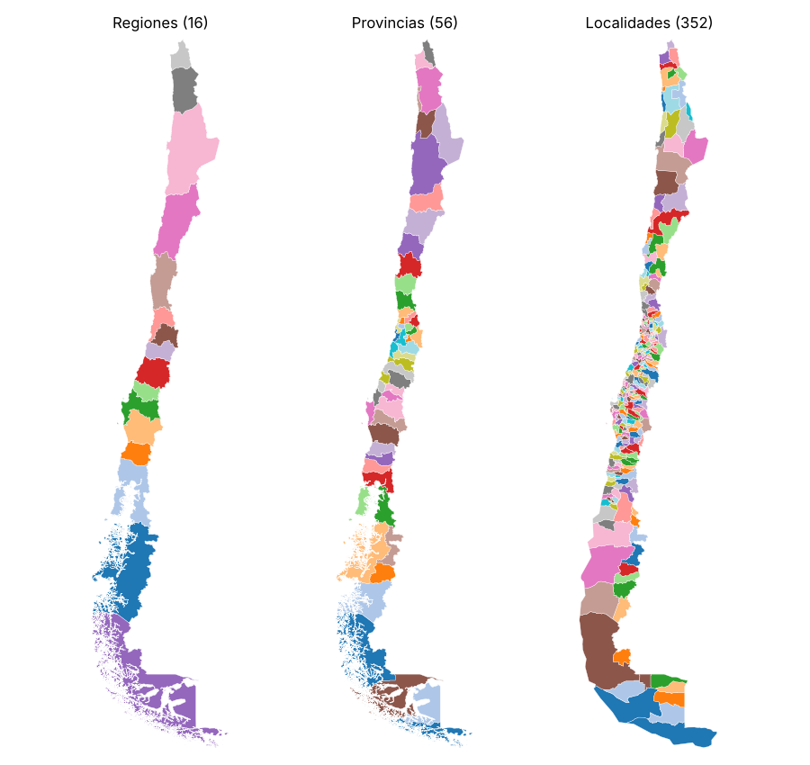

Límites administrativos de Chile con Overture Maps
Resumen
El proyecto extrae los límites administrativos de Chile desde Overture Maps con un flujo reproducible basado solo en DuckDB, que lee los GeoParquet directamente desde S3. Parte de un reconocimiento visual en Overture Explorer y termina con un archivo por nivel administrativo en GeoJSON y GeoPackage. Esos límites son la máscara de Chile de la serie Exploring ERA5.
| Aspecto | Detalle |
|---|---|
| Fuente | Overture Maps, tema divisions, tipo division_area (polígonos) |
| Acceso | DuckDB con httpfs y spatial, consultando S3 sin descarga previa |
| Filtro | country = 'CL' y class = 'land', sin bbox para incluir las islas |
| Salida | GeoJSON y GeoPackage por subtype, en EPSG:4326 |
| Herramientas | Python con DuckDB, GeoPandas, shapely, matplotlib y folium |
Hallazgo principal
Overture entrega 16 regiones y 56 provincias, completas. El nivel comunal viene como locality, no como localadmin: asumir localadmin devuelve cero comunas.

Objetivos
- Entender qué tipos trae el tema
divisionsy cuál contiene los límites. - Consultar los datos remotos sin descargarlos completos.
- Extraer todos los niveles administrativos de Chile, islas incluidas.
- Visualizarlos de forma estática e interactiva.
- Exportarlos por nivel en formatos listos para web y para QGIS.
Flujo de trabajo
- Reconocimiento. Overture Explorer para confirmar nombres de campos y valores.
- Release y conexión. Se lista el bucket público y se fija una release; DuckDB se conecta a S3.
- Esquema.
DESCRIBEsobre el Parquet remoto, sin leer geometrías. - Inventario. Un
GROUP BY subtype, classliviano muestra qué niveles existen para Chile. - Extracción. Filtro en SQL y geometría a WKB con
ST_AsWKB, cargada en unGeoDataFrame. - Visualización. Mapa estático por
subtypey mapa interactivo conexplore(). - Exportación. Un GeoJSON y un GeoPackage por nivel.
Resultados
subtype |
Equivalente en Chile | Polígonos |
|---|---|---|
country |
País | 1 |
region |
Regiones | 16 |
county |
Provincias | 56 |
locality |
Comunas (aprox.) | 352 |
neighborhood |
Barrios (cobertura parcial) | 390 |
microhood |
Microbarrios | 110 |
macrohood |
Macrobarrios | 1 |
Decisiones técnicas
- Filtrar por atributo y no por bbox, para no perder Isla de Pascua ni Juan Fernández.
- Solo límites terrestres, porque los polígonos marítimos se superponen con los de tierra.
- Geometría en WKB desde SQL, para pasar a GeoPandas sin archivos intermedios.
- Release fijada. El notebook toma la más reciente; para reproducir un resultado exacto se fija a mano.
Limitaciones
- Las 352
localityno calzan 1:1 con las 346 comunas oficiales. Antes de usarlas como comunas hay que validarlas contra la división oficial (BCN/INE). - Los barrios tienen cobertura parcial: dependen de lo que aporte OpenStreetMap en cada zona.
- Los datos derivados exigen atribución a Overture Maps Foundation y sus fuentes (ODbL / CDLA-Permissive-2.0).